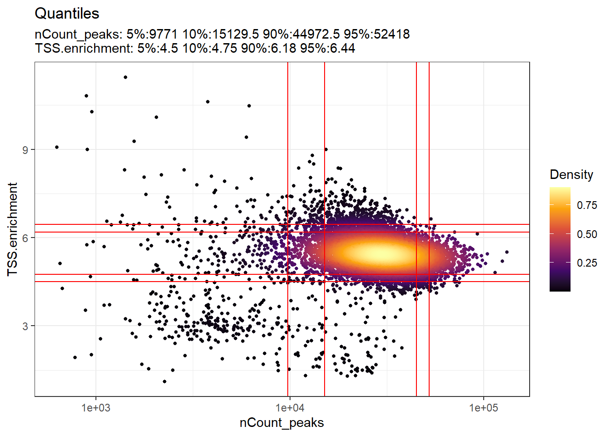
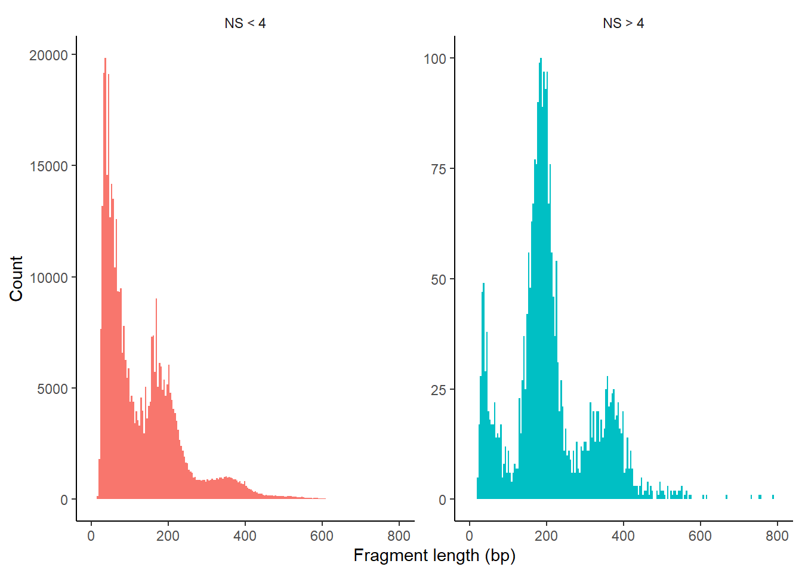
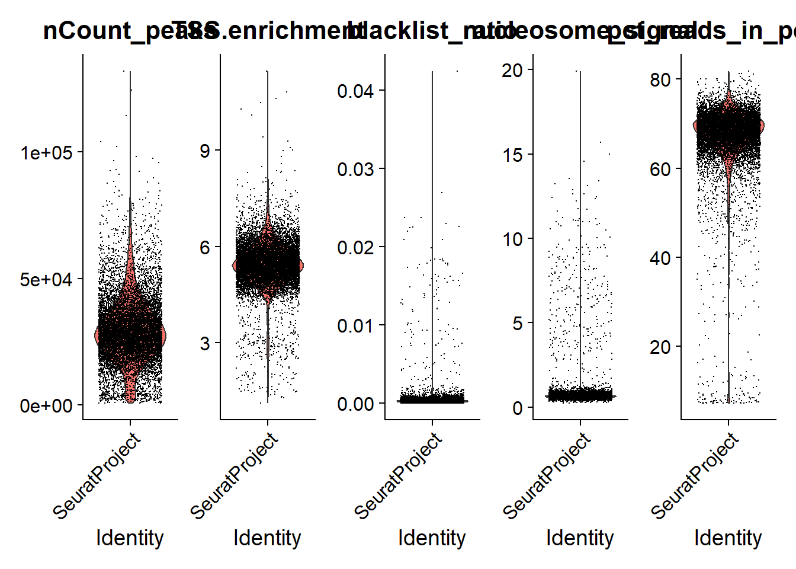
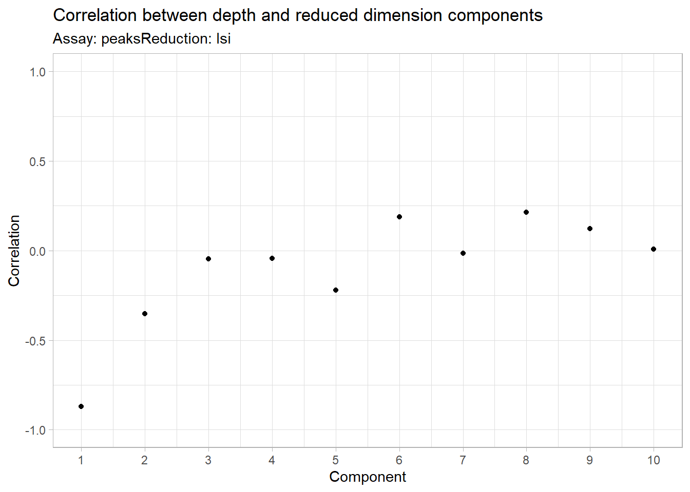
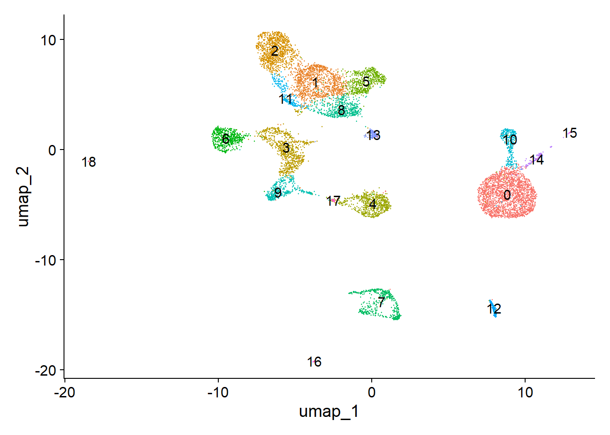
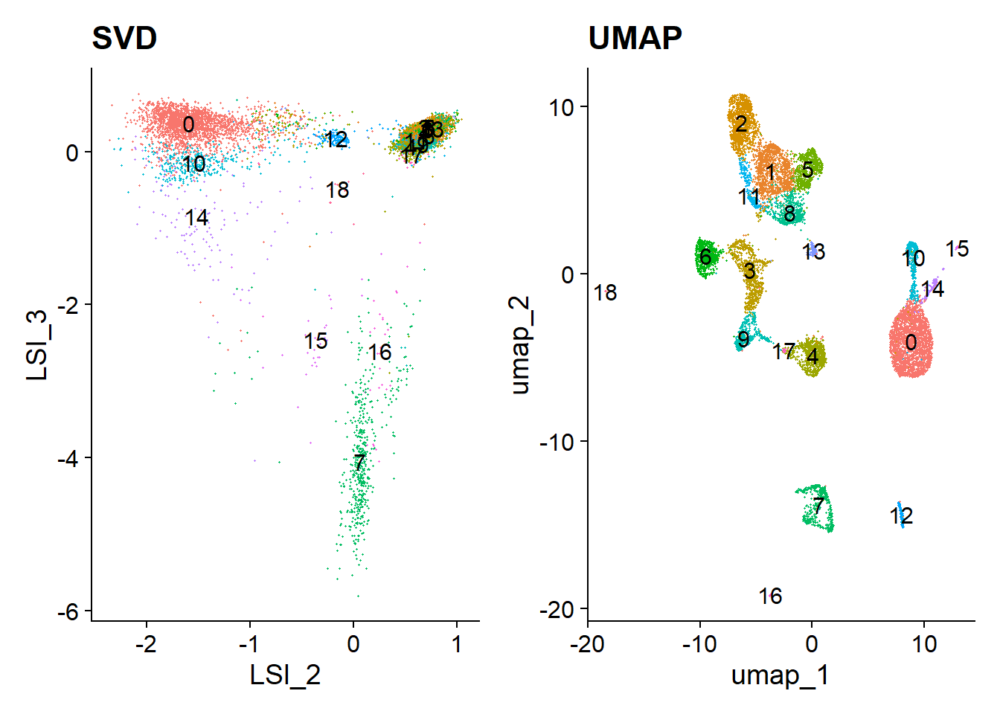

flowchart LR A(Import Data) --> B(Annotation) B --> C(Computing QC metrics) C --> D(Normalization and linear \ndimensional reduction) D --> E(Non-linear dimensional \nreduction and clustering)
2 Practical 13: scATAC-seq Pre-Processing and Quality Control
In this step, we will demonstrate the following:
- Import data generated by 10x Cell Ranger ATAC.
- Understand the format and structure of scATAC-seq files.
- Generate the corresponding annotations in the scATAC-seq dataset.
- Perform quality control on the obtained sequences.
- Apply normalization and dimensionality reduction to the dataset.
- Implement non-linear dimensionality reduction and perform clustering of the cells.
2.1 Dataset overview
For this tutorial, we will be analyzing a single-cell ATAC-seq dataset of human peripheral blood mononuclear cells (PBMCs) provided by 10x Genomics. The following files are used in this course, all available through the 10x Genomics website:
The Raw data: Filtered peak barcode matrix. File name:
Peak by cell matrix HDF5 (filtered). Format: h5 / hdf5.The Metadata: Per-barcode fragment counts & metrics.
Per Barcode metrics. Format: csv.The fragments file: Barcoded and aligned fragment file. File name:
Fragments. Format: tsv.gz.The fragments file index: Fragments file index. File name:
Fragments index. Format: tbi.
Our starting points is the output of cellranger-atac (v2.1.0), a 10x Genomics software used for alignment peak calling and initial quality control (QC) of the assay on 10x PBMCs from healthy donor (unimodal scATAC-seq assay).
View data download code
Total 2.7 Gb
# Raw data
wget https://cf.10xgenomics.com/samples/cell-atac/2.1.0/10k_pbmc_ATACv2_nextgem_Chromium_Controller/10k_pbmc_ATACv2_nextgem_Chromium_Controller_filtered_peak_bc_matrix.h5
# metadata
wget https://cf.10xgenomics.com/samples/cell-atac/2.1.0/10k_pbmc_ATACv2_nextgem_Chromium_Controller/10k_pbmc_ATACv2_nextgem_Chromium_Controller_singlecell.csv
# fragments file
wget https://cf.10xgenomics.com/samples/cell-atac/2.1.0/10k_pbmc_ATACv2_nextgem_Chromium_Controller/10k_pbmc_ATACv2_nextgem_Chromium_Controller_fragments.tsv.gz
# fragments index
wget https://cf.10xgenomics.com/samples/cell-atac/2.1.0/10k_pbmc_ATACv2_nextgem_Chromium_Controller/10k_pbmc_ATACv2_nextgem_Chromium_Controller_fragments.tsv.gz.tbi2.1.1 Summary file metrics
According to the data report, we observed 10,246 PBMC nuclei were recovered. ATAC libraries were generated as described in the Chromium Single Cell ATAC Reagent Kits User Guide (v2 chemistry) using the Chromium Controller and sequenced on Illumina NovaSeq 6000 to approximately 55 k read pairs per cell.
If you want to know more information about how to analyze the report check this information or check this web page.
2.1.2 PBMCs
Note
Peripheral Blood Mononuclear Cells (PBMCs) are all blood cells with a single nucleus, including lymphocytes (T cells, B cells, and NK cells) and monocytes. Erythrocytes, platelets, and granulocytes are not considered PBMCs because they have either no nuclei or multiple nuclei. PBMCs play a crucial role in the immune system and serve as important tools for immunological research.

2.2 Seurat + Signac Workflow

Pre-processing workflow
2.3 📗 Step 1: Import Data
When pre-processing chromatin data, Signac uses information from 4 related input files, both of which can be created using Cell Ranger ATAC:
Peak/Cell Matrix (raw data): Similar to the gene expression count matrix used in single-cell RNA-seq, but instead of genes, the rows represent regions of the genome (peaks) that indicate areas of open chromatin. Each value in the matrix represents the number of Tn5 integration sites for each barcode (cell) that map within each peak. More information about this file on the 10x Genomics website.
Metadata: Cell Ranger ATAC identifies cells by determining whether each barcode corresponds to a cell from any species in the reference. It also generates QC data, including the number of fragments per barcode and ATAC signal, based on metrics like the overlap of fragments with transcription start sites (TSS) from the reference. This barcode-level information is compiled into a single output table. More information about this file on the 10x Genomics website.
Fragment File: Contains a complete list of all unique fragments across all single cells. Although it is larger and slower to process, and is stored on-disk (instead of in memory), its advantage is that it includes all fragments associated with each cell, not just those that map to peaks. More information about the fragment file can be found on the 10x Genomics website or on the sinto website.
Fragment index file: The fragment index file enables fast access to specific fragments in a sequencing file by indexing their positions. This speeds up retrieval and improves analysis efficiency.
What if I don’t have a H5 file?
Then you can use other outputs from cellranger:
counts:
matrix.mtxbarcodes:
barcodes.tsvpeaks:
peaks.bed
Alternatively, you might only have a fragment file. In this case you can create a count matrix using the FeatureMatrix() function. If you want to know about this check the Signac tutorial.
Code
library(Signac)
library(Seurat)
library(GenomicRanges) # genomic data manipulation
library(ggplot2) #vizualization
library(patchwork) # Vizualization
library(EnsDb.Hsapiens.v86) # human genome hg38
library(future) # parallelization in SignacR version: R version 4.4.1 (2024-06-14 ucrt) Number of cores: 8 [1] '1.14.0'multicore:
- args: function (..., workers = 8, envir = parent.frame())
- tweaked: TRUE
- call: plan("multicore", workers = 8)2.3.1 Create ChromatinAssay
The ATAC-seq data is stored using a custom assay, the ChromatinAssay. This enables some specialized functions for analysing genomic single-cell assays such as scATAC-seq. By printing the assay we can see some of the additional information that can be contained in the ChromatinAssay, including motif information, gene annotations, and genome information.
Code
counts <- Read10X_h5(filename = "data/10k_pbmc_ATACv2_nextgem_Chromium_Controller_filtered_peak_bc_matrix.h5")
metadata <- read.csv(
file = "data/10k_pbmc_ATACv2_nextgem_Chromium_Controller_singlecell.csv",
header = TRUE,
row.names = 1
)
chrom_assay <- CreateChromatinAssay(
counts = counts,
sep = c(":", "-"),
fragments = "data/10k_pbmc_ATACv2_nextgem_Chromium_Controller_fragments.tsv.gz",
min.cells = 10,
min.features = 200
)Computing hashCode
pbmc <- CreateSeuratObject(
counts = chrom_assay,
assay = "peaks",
meta.data = metadata
)Check global information
Code
pbmcAn object of class Seurat
165434 features across 10246 samples within 1 assay
Active assay: peaks (165434 features, 0 variable features)
2 layers present: counts, dataCheck ATAC information
Code
pbmc[['peaks']]ChromatinAssay data with 165434 features for 10246 cells
Variable features: 0
Genome:
Annotation present: FALSE
Motifs present: FALSE
Fragment files: 1 We then remove features that correspond to chromosome scaffolds (e.g., KI270713.1) or any other sequences that are not part of the 22 standard autosomes or the two sex chromosomes (X and Y), ensuring that only well-characterized and fully assembled chromosomal regions are included in the analysis.We then remove the features that correspond to chromosome scaffolds e.g. (KI270713.1) or other sequences instead of the (22+2) standard chromosomes.
Code
peaks.keep <- seqnames(granges(pbmc)) %in% standardChromosomes(granges(pbmc))
pbmc <- pbmc[as.vector(peaks.keep), ]2.4 ✒️ Step 2: Annotation
We can also add gene annotations to the pbmc object for the human genome. This will allow downstream functions to pull the gene annotation information directly from the object.
Before annotation
Code
pbmc@assays$peaks@annotationNULL2.4.1 Get gene annotations for the peaks and add to the object
From the dataset summary, we can see that the reference package 10x Genomics used to perform the mapping was “GRCh38-2020-A”, which corresponds to the Ensembl v98 (hg38) patch release.
Code
# extract gene annotations from EnsDb
annotations <- GetGRangesFromEnsDb(ensdb = EnsDb.Hsapiens.v86)
# change to UCSC style since the data was mapped to hg38
seqlevelsStyle(annotations) <- 'UCSC'
genome(annotations) <- "hg38"
# Check chromosomes
seqlevels(annotations) [1] "chrX" "chr20" "chr1" "chr6" "chr3" "chr7" "chr12" "chr11" "chr4"
[10] "chr17" "chr2" "chr16" "chr8" "chr19" "chr9" "chr13" "chr14" "chr5"
[19] "chr22" "chr10" "chrY" "chr18" "chr15" "chr21" "chrM" Code
# add the gene information to the object
Annotation(pbmc) <- annotationsOther options
Code
library(AnnotationHub)
ah <- AnnotationHub()
# Search for the Ensembl 98 EnsDb for Homo sapiens on AnnotationHub
query(ah, "EnsDb.Hsapiens.v98")
ensdb_v98 <- ah[["AH75011"]]
# extract gene annotations from EnsDb
annotations <- GetGRangesFromEnsDb(ensdb = ensdb_v98)
# change to UCSC style since the data was mapped to hg38
seqlevels(annotations) <- paste0('chr', seqlevels(annotations))
genome(annotations) <- "hg38"
# add the gene information to the object
Annotation(pbmc) <- annotationsOlder version (hg19)
Code
# BiocManager::install(c('BSgenome.Hsapiens.UCSC.hg19', 'EnsDb.Hsapiens.v75'))
# first get some gene annotations for hg19
library(EnsDb.Hsapiens.v75)
# convert EnsDb to GRanges
annotation <- GetGRangesFromEnsDb(ensdb = EnsDb.Hsapiens.v75)
# convert to UCSC style
seqlevels(annotation) <- paste0('chr', seqlevels(annotation))
genome(annotation) <- "hg19"
# set gene annotations
Annotation(pbmc) <- annotation
# get gene annotation information
Annotation(pbmc)Older version (hg19)
Code
library(EnsDb.Hsapiens.v75)
# extract gene annotations from EnsDb
annotation <- GetGRangesFromEnsDb(ensdb = EnsDb.Hsapiens.v75)
# change to UCSC style since the data was mapped to hg19
seqlevelsStyle(annotation) <- 'UCSC'
# add the gene information to the object
Annotation(pbmc) <- annotation
# check
head(seqlevels(pbmc))For more details on Data structures and object interaction in Signac. EnsDb.Hsapiens.v86 was used for Joint RNA and ATAC analysis: 10x multiomic. Informations about genome version can be found at this link.
After adding the gene annotation:
Code
pbmc@assays$peaks@annotationGRanges object with 3021151 ranges and 5 metadata columns:
seqnames ranges strand | tx_id gene_name
<Rle> <IRanges> <Rle> | <character> <character>
ENSE00001489430 chrX 276322-276394 + | ENST00000399012 PLCXD1
ENSE00001536003 chrX 276324-276394 + | ENST00000484611 PLCXD1
ENSE00002160563 chrX 276353-276394 + | ENST00000430923 PLCXD1
ENSE00001750899 chrX 281055-281121 + | ENST00000445062 PLCXD1
ENSE00001489388 chrX 281192-281684 + | ENST00000381657 PLCXD1
... ... ... ... . ... ...
ENST00000361739 chrM 7586-8269 + | ENST00000361739 MT-CO2
ENST00000361789 chrM 14747-15887 + | ENST00000361789 MT-CYB
ENST00000361851 chrM 8366-8572 + | ENST00000361851 MT-ATP8
ENST00000361899 chrM 8527-9207 + | ENST00000361899 MT-ATP6
ENST00000362079 chrM 9207-9990 + | ENST00000362079 MT-CO3
gene_id gene_biotype type
<character> <character> <factor>
ENSE00001489430 ENSG00000182378 protein_coding exon
ENSE00001536003 ENSG00000182378 protein_coding exon
ENSE00002160563 ENSG00000182378 protein_coding exon
ENSE00001750899 ENSG00000182378 protein_coding exon
ENSE00001489388 ENSG00000182378 protein_coding exon
... ... ... ...
ENST00000361739 ENSG00000198712 protein_coding cds
ENST00000361789 ENSG00000198727 protein_coding cds
ENST00000361851 ENSG00000228253 protein_coding cds
ENST00000361899 ENSG00000198899 protein_coding cds
ENST00000362079 ENSG00000198938 protein_coding cds
-------
seqinfo: 25 sequences (1 circular) from hg38 genome2.5 📕 Step 3: Computing QC metrics
We can now compute QC metrics for the scATAC-seq experiment. Below are the recommended metrics for assessing data quality. As with scRNA-seq, expected values may vary depending on factors such as biological system and cell viability.
Nucleosome banding pattern: The DNA fragment size histogram should show a distinct nucleosome banding pattern, indicating DNA wrapped around nucleosomes. We calculate this per cell and quantify the ratio of mononucleosomal to nucleosome-free fragments (stored as
nucleosome_signal).ratio of nucleosome size fragments (147-294 nucleotides)
nucleosome-free fragments (<147 nucleotides)
TSS enrichment score: Defined by ENCODE, this score measures the ratio of fragments centered at transcription start sites (TSS) compared to flanking regions. Poor experiments tend to have low TSS enrichment. You can calculate it per cell using
TSSEnrichment(), with results stored in theTSS.enrichmentmetadata column.Total fragments in peaks: A measure of sequencing depth. Cells with very few reads may need to be excluded, while those with excessively high reads might indicate doublets or artifacts.
Fraction of fragments in peaks: This is the proportion of fragments falling within ATAC-seq peaks. Cells with low values (<15-20%) may indicate low quality or technical artifacts and should be removed.
Ratio of reads in blacklist regions: The ENCODE blacklist identifies regions prone to artefactual signal. Cells with a high fraction of reads mapping to these regions should be excluded. You can calculate this using
FractionCountsInRegion()with the blacklist regions included in Signac.
These metrics can be obtained from Cell Ranger output or calculated for non-10x datasets using Signac.
2.5.1 Bioanalyzer results and TSS region
d. Successful library (TSS score: 8.3) with clear nucleosomal periodicity.
e. Successful library (TSS score: 8.8) with minimal nucleosomal periodicity.
f. Unsuccessful library (TSS score: 1.7) with poor signal-to-background and low quality.
Large fragments (>2,000 bp) appear in Bioanalyzer traces but not in sequencing data.
2.5.2 Impact of Sample Type on Fragment Yield and Sequencing Quality
Note
Scatterplot colored by point density: This plot shows the
log10(unique nuclear fragments)vs TSS enrichment score and indicates the thresholds used with dotted lines.Histogram: These plot shows the fragment size distribution.
2.5.3 ATAC-seq insert sizes disclose nucleosome positions
ATAC-seq paired-end reads provided detailed insights into nucleosome packing and positioning. The fragment size distribution from human chromatin showed clear 200 bp periodicity, indicating fragments protected by multiple nucleosomes.
Again in the code:
Code
# compute nucleosome signal score per cell
pbmc <- NucleosomeSignal(object = pbmc)
# compute TSS enrichment score per cell
pbmc <- TSSEnrichment(object = pbmc)
# add fraction of reads in peaks
pbmc$pct_reads_in_peaks <- pbmc$peak_region_fragments / pbmc$passed_filters * 100
# add blacklist ratio
pbmc$blacklist_ratio <- FractionCountsInRegion(
object = pbmc,
assay = 'peaks',
regions = blacklist_hg38_unified
)The relationship between variables stored in the object metadata can be visualized using the DensityScatter() function. This can also be used to quickly find suitable cutoff values for different QC metrics by setting quantiles=TRUE:
Code
DensityScatter(pbmc, x = 'nCount_peaks', y = 'TSS.enrichment', log_x = TRUE, quantiles = TRUE)
We can also look at the fragment length periodicity for all the cells, and group by cells with high or low nucleosomal signal strength. You can see that cells that are outliers for the mononucleosomal / nucleosome-free ratio (based on the plots above) have different nucleosomal banding patterns. The remaining cells exhibit a pattern that is typical for a successful ATAC-seq experiment.
2.5.4 Fragment size distribution
Code
pbmc$nucleosome_group <- ifelse(pbmc$nucleosome_signal > 4, 'NS > 4', 'NS < 4')
FragmentHistogram(object = pbmc, group.by = 'nucleosome_group')
We can plot the distribution of each QC metric separately using a violin plot:
Code
VlnPlot(
object = pbmc,
features = c('nCount_peaks', 'TSS.enrichment', 'blacklist_ratio', 'nucleosome_signal', 'pct_reads_in_peaks'),
pt.size = 0.1,
ncol = 5
)
Finally we remove cells that are outliers for these QC metrics. The exact QC thresholds used will need to be adjusted according to your dataset.
Code
pbmc <- subset(
x = pbmc,
subset = nCount_peaks > 9000 &
nCount_peaks < 100000 &
pct_reads_in_peaks > 40 & # 40 % of the reads in the peaks
blacklist_ratio < 0.01 & # more of 1 % of the reads mapeaning in blacklist ratio
nucleosome_signal < 4 &
TSS.enrichment > 4 # enrichment score
)
pbmcAn object of class Seurat
165376 features across 9649 samples within 1 assay
Active assay: peaks (165376 features, 0 variable features)
2 layers present: counts, data used (Mb) gc trigger (Mb) max used (Mb)
Ncells 14848910 793.1 44127650 2356.7 44127650 2356.7
Vcells 585590329 4467.7 1160573644 8854.5 1160573644 8854.5
Note
This code filters the pbmc object to retain only high-quality cells based on specific criteria:
nCount_peaks > 9000: Keeps cells with more than 9000 reads in accessible regions.nCount_peaks < 100000: Removes cells with an excessive number of reads, likely artifacts.pct_reads_in_peaks > 40: Retains cells where over 40% of reads fall within peaks (high-quality signal).blacklist_ratio < 0.01: Excludes cells with more than 1% of reads in blacklisted regions (unreliable areas).nucleosome_signal < 4: Keeps cells with low nucleosome signal, indicating accessible chromatin.TSS.enrichment > 4: Retains cells with strong enrichment near transcription start sites (good data quality).
2.6 📘 Step 4: Normalization and linear dimensional reduction (LSI)
✅ Normalization:
Signacperforms term frequency-inverse document frecuency (TF-IDF) normalization, a two-step process that adjusts for differences in sequencing depth across cells and assigns higher values to rare peaks. Run term frequency inverse document frequency (TF-IDF) normalization on a matrix usingRunTFIDF().
Figure 2.6: TF-IDF(term frequency-inverse document frequency). From: Almarashy, et al. 2023. IEEE Access
More information
Term-Frequency Inverse-Document-Frequency (TF-IDF) is a technique commonly used in text processing, but in the context of scATAC-seq (single-cell Assay for Transposase-Accessible Chromatin sequencing), it is adapted to quantify and normalize chromatin accessibility signals across different cells.
Here’s how this concept is applied in scATAC-seq:
Term Frequency (TF): In scATAC-seq, “terms” correspond to peaks of chromatin accessibility, and the “document” is an individual cell. “TF” measures how frequently a given accessible site (a peak) is present in a particular cell. Essentially, it represents the frequency of accessibility of a peak within a cell.
Inverse Document Frequency (IDF): “IDF” measures how common or rare a peak is across all cells. If a peak is present in many cells, its IDF will be low because it is not informative. Conversely, if a peak is present only in a few cells, its IDF will be high, reflecting its specificity.
Application in scATAC-seq: The purpose of using TF-IDF in scATAC-seq is to improve the representation of accessibility data. Given the high sparsity of single-cell data and the binary nature of accessibility (present or absent), applying TF-IDF helps to highlight peaks that are specific to certain cells. This enables better downstream analysis, such as dimensionality reduction or clustering, to capture biological differences between cells more accurately.
Summary:
TF measures how frequently a peak is accessible in a cell.
IDF penalizes peaks that are accessible in many cells and gives more weight to those specific to fewer cells.
TF-IDF in scATAC-seq is used to normalize the data, providing a better representation of chromatin accessibility for analyses like clustering or dimensionality reduction.
✅ Feature selection: Unlike scRNA-seq, scATAC-seq has low dynamic range, making variable feature selection difficult.
A) Instead, we can choose to use only the top n% of features (peaks) for dimensional reduction, or remove features present in less than n cells with the
FindTopFeatures()function.B) Features used for dimensional reduction are automatically set as
VariableFeatures()for the Seurat object by this function.NOTE: Even when using all features, similar results are observed, with faster runtimes when using a subset (e.g., the top 25% of peaks with min.cutoff = ‘q75’).
✅ Dimension reduction: Singular Value Decomposition (SVD) is applied to the TF-IDF matrix using the selected peaks, generating a reduced dimensional representation similar to PCA in scRNA-seq analyses. Run singular value decomposition using RunSVD().
The combined steps of TF-IDF followed by SVD are known as latent semantic indexing (LSI), and were first introduced for the analysis of scATAC-seq data by Cusanovich et al. 2015.
Code
pbmc <- RunTFIDF(pbmc)Performing TF-IDF normalizationCode
pbmc <- FindTopFeatures(pbmc, min.cutoff = 'q0')
pbmc <- RunSVD(pbmc)Running SVDScaling cell embeddings used (Mb) gc trigger (Mb) max used (Mb)
Ncells 14857990 793.6 44127650 2356.7 44127650 2356.7
Vcells 546696312 4171.0 1160573644 8854.5 1160573644 8854.5The first LSI component often captures sequencing depth (technical variation) rather than biological variation. If this is the case, the component should be removed from downstream analysis. We can assess the correlation between each LSI component and sequencing depth using the DepthCor() function:
Code
DepthCor(pbmc)
Here we see there is a very strong correlation between the first LSI component and the total number of counts for the cell. We will perform downstream steps without this component as we don’t want to group cells together based on their total sequencing depth, but rather by their patterns of accessibility at cell-type-specific peaks.
Why did we eliminate component 1?
Component 1 is often removed in dimensionality reduction analyses because it may capture non-biological variability or technical artifacts rather than biologically relevant patterns. Removing it helps focus on components that better reflect the true biological structure of the data.
2.7 📙 Step 5: Non-linear dimensional reduction and clustering
Now that the cells are embedded in a low-dimensional space we can use methods commonly applied for the analysis of scRNA-seq data to perform graph-based clustering and non-linear dimension reduction for visualization. The functions RunUMAP(), FindNeighbors(), and FindClusters() all come from the Seurat package.
2.7.1 Perform UMAP
Uniform Manifold Approximation and Projection (UMAP) is a dimension reduction technique that can be used for visualisation similarly to t-SNE, but also for general non-linear dimension reduction. It was proposed by McInnes et al. 2018.
This results in the creation of two new parameters UMAP 1 and UMAP 2. UMAP captures local relationships within a cluster as well as global relationships between distinct clusters.
Note
While PCA assumes that the variation of interest follows a specific distribution (generally normal), UMAP is more flexible and can learn complex, non-linear distributions directly from the data. This flexibility allows UMAP to better separate clusters, particularly when some clusters are more similar to each other. As a result, UMAP often excels at revealing nuanced relationships and improving cluster separation in datasets with intricate patterns.
UMAP Visualization - bulk RNA-seq
Also you can extract the normalized counts data from the DESeqDataSet object and perform UMAP on the normalized data using umap() from the umap package.
Code
pbmc <- RunUMAP(object = pbmc, reduction = 'lsi', dims = 2:30)21:55:08 UMAP embedding parameters a = 0.9922 b = 1.11221:55:08 Read 9649 rows and found 29 numeric columns21:55:08 Using Annoy for neighbor search, n_neighbors = 3021:55:08 Building Annoy index with metric = cosine, n_trees = 500% 10 20 30 40 50 60 70 80 90 100%[----|----|----|----|----|----|----|----|----|----|**************************************************|
21:55:09 Writing NN index file to temp file C:\Users\ecoss\AppData\Local\Temp\RtmpovQGFE\file4b7cfbb4fc9
21:55:09 Searching Annoy index using 8 threads, search_k = 3000
21:55:10 Annoy recall = 100%
21:55:11 Commencing smooth kNN distance calibration using 8 threads with target n_neighbors = 30
21:55:14 Initializing from normalized Laplacian + noise (using RSpectra)
21:55:14 Commencing optimization for 500 epochs, with 384536 positive edges
21:55:40 Optimization finishedCode
pbmc <- FindNeighbors(object = pbmc, reduction = 'lsi', dims = 2:30)Computing nearest neighbor graph
Computing SNNCode
pbmc <- FindClusters(object = pbmc, verbose = FALSE, algorithm = 3)
DimPlot(object = pbmc, label = TRUE) + NoLegend()
Now, we can cluster the cells to find groups that belong to the same cell types. It is possible to plot the results from the SVD, but these often are not informative. Instead, we use the UMAP algorithm, which shows a better separation between the cell types. If you are interested, the paper describing UMAP can be found here.
Code
p1 <- DimPlot(object = pbmc, label = TRUE, dims = c(2, 3), reduction = "lsi") +
NoLegend() +
ggtitle('SVD')
p2 <- DimPlot(object = pbmc, label = TRUE) +
NoLegend() +
ggtitle('UMAP')
p1 | p2
used (Mb) gc trigger (Mb) max used (Mb)
Ncells 14904626 796.0 44127650 2356.7 44127650 2356.7
Vcells 548217690 4182.6 1160573644 8854.5 1160573644 8854.5Code
sessionInfo()R version 4.4.1 (2024-06-14 ucrt)
Platform: x86_64-w64-mingw32/x64
Running under: Windows 11 x64 (build 22631)
Matrix products: default
locale:
[1] LC_COLLATE=English_United States.utf8
[2] LC_CTYPE=English_United States.utf8
[3] LC_MONETARY=English_United States.utf8
[4] LC_NUMERIC=C
[5] LC_TIME=English_United States.utf8
time zone: America/Mexico_City
tzcode source: internal
attached base packages:
[1] stats4 stats graphics grDevices utils datasets methods
[8] base
other attached packages:
[1] future_1.34.0 EnsDb.Hsapiens.v86_2.99.0
[3] ensembldb_2.28.1 AnnotationFilter_1.28.0
[5] GenomicFeatures_1.56.0 AnnotationDbi_1.66.0
[7] Biobase_2.64.0 patchwork_1.2.0
[9] ggplot2_3.5.1 GenomicRanges_1.56.1
[11] GenomeInfoDb_1.40.1 IRanges_2.38.1
[13] S4Vectors_0.42.1 BiocGenerics_0.50.0
[15] Seurat_5.1.0 SeuratObject_5.0.2
[17] sp_2.1-4 Signac_1.14.0
loaded via a namespace (and not attached):
[1] RcppAnnoy_0.0.22 splines_4.4.1
[3] later_1.3.2 BiocIO_1.14.0
[5] bitops_1.0-8 tibble_3.2.1
[7] polyclip_1.10-7 rpart_4.1.23
[9] XML_3.99-0.17 fastDummies_1.7.4
[11] lifecycle_1.0.4 hdf5r_1.3.11
[13] globals_0.16.3 lattice_0.22-6
[15] MASS_7.3-60.2 backports_1.5.0
[17] magrittr_2.0.3 Hmisc_5.1-3
[19] plotly_4.10.4 rmarkdown_2.28
[21] yaml_2.3.10 httpuv_1.6.15
[23] sctransform_0.4.1 spam_2.10-0
[25] spatstat.sparse_3.1-0 reticulate_1.39.0
[27] cowplot_1.1.3 pbapply_1.7-2
[29] DBI_1.2.3 RColorBrewer_1.1-3
[31] abind_1.4-5 zlibbioc_1.50.0
[33] Rtsne_0.17 purrr_1.0.2
[35] biovizBase_1.52.0 RCurl_1.98-1.16
[37] nnet_7.3-19 VariantAnnotation_1.50.0
[39] GenomeInfoDbData_1.2.12 ggrepel_0.9.5
[41] irlba_2.3.5.1 listenv_0.9.1
[43] spatstat.utils_3.1-0 goftest_1.2-3
[45] RSpectra_0.16-2 spatstat.random_3.3-1
[47] fitdistrplus_1.2-1 parallelly_1.38.0
[49] leiden_0.4.3.1 codetools_0.2-20
[51] DelayedArray_0.30.1 RcppRoll_0.3.1
[53] tidyselect_1.2.1 farver_2.1.2
[55] UCSC.utils_1.0.0 base64enc_0.1-3
[57] matrixStats_1.4.0 spatstat.explore_3.3-2
[59] GenomicAlignments_1.40.0 jsonlite_1.8.8
[61] Formula_1.2-5 progressr_0.14.0
[63] ggridges_0.5.6 survival_3.6-4
[65] tools_4.4.1 ica_1.0-3
[67] Rcpp_1.0.13 glue_1.7.0
[69] SparseArray_1.4.8 gridExtra_2.3
[71] xfun_0.45 MatrixGenerics_1.16.0
[73] dplyr_1.1.4 withr_3.0.1
[75] fastmap_1.2.0 fansi_1.0.6
[77] digest_0.6.36 R6_2.5.1
[79] mime_0.12 colorspace_2.1-1
[81] scattermore_1.2 tensor_1.5
[83] dichromat_2.0-0.1 spatstat.data_3.1-2
[85] RSQLite_2.3.7 utf8_1.2.4
[87] tidyr_1.3.1 generics_0.1.3
[89] data.table_1.16.0 rtracklayer_1.64.0
[91] httr_1.4.7 htmlwidgets_1.6.4
[93] S4Arrays_1.4.1 uwot_0.2.2
[95] pkgconfig_2.0.3 gtable_0.3.5
[97] blob_1.2.4 lmtest_0.9-40
[99] XVector_0.44.0 htmltools_0.5.8.1
[101] dotCall64_1.1-1 ProtGenerics_1.36.0
[103] scales_1.3.0 png_0.1-8
[105] spatstat.univar_3.0-1 knitr_1.48
[107] rstudioapi_0.16.0 reshape2_1.4.4
[109] rjson_0.2.22 checkmate_2.3.2
[111] nlme_3.1-164 curl_5.2.2
[113] zoo_1.8-12 cachem_1.1.0
[115] stringr_1.5.1 KernSmooth_2.23-24
[117] vipor_0.4.7 parallel_4.4.1
[119] miniUI_0.1.1.1 foreign_0.8-86
[121] ggrastr_1.0.2 restfulr_0.0.15
[123] pillar_1.9.0 grid_4.4.1
[125] vctrs_0.6.5 RANN_2.6.2
[127] promises_1.3.0 xtable_1.8-4
[129] cluster_2.1.6 beeswarm_0.4.0
[131] htmlTable_2.4.3 evaluate_0.24.0
[133] cli_3.6.2 compiler_4.4.1
[135] Rsamtools_2.20.0 rlang_1.1.3
[137] crayon_1.5.3 future.apply_1.11.2
[139] labeling_0.4.3 ggbeeswarm_0.7.2
[141] plyr_1.8.9 stringi_1.8.4
[143] viridisLite_0.4.2 deldir_2.0-4
[145] BiocParallel_1.38.0 munsell_0.5.1
[147] Biostrings_2.72.1 lazyeval_0.2.2
[149] spatstat.geom_3.3-2 Matrix_1.7-0
[151] BSgenome_1.72.0 RcppHNSW_0.6.0
[153] bit64_4.0.5 KEGGREST_1.44.1
[155] shiny_1.9.1 SummarizedExperiment_1.34.0
[157] ROCR_1.0-11 igraph_2.0.3
[159] memoise_2.0.1 fastmatch_1.1-4
[161] bit_4.0.5 2.8 References
https://www.jpt.com/support-contact/resources/pbmc/
Data structures and object interaction
Joint RNA and ATAC analysis: 10x multiomic.
https://stuartlab.org/signac/1.2.0/articles/install
https://stuartlab.org/signac/articles/pbmc_multiomic
https://support.10xgenomics.com/single-cell-atac/software/pipelines/latest/output/metrics
https://www.nature.com/articles/nmeth.2688
Analyzing adult mouse brain scATAC-seq
Raton https://rpubs.com/kshridevi/1176302
https://ieeexplore.ieee.org/document/10343156
https://stuartlab.org/signac/articles/pbmc_vignette
https://arxiv.org/abs/1802.03426
https://alexslemonade.github.io/refinebio-examples/03-rnaseq/dimension-reduction_rnaseq_02_umap.html#4_UMAP_Visualization_-_RNA-seq